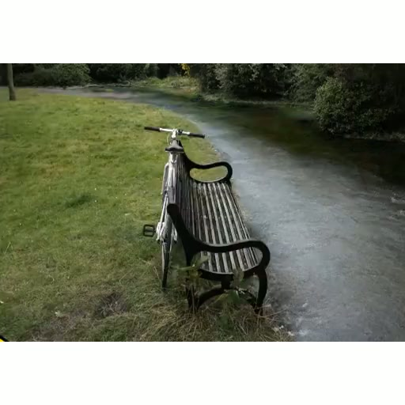
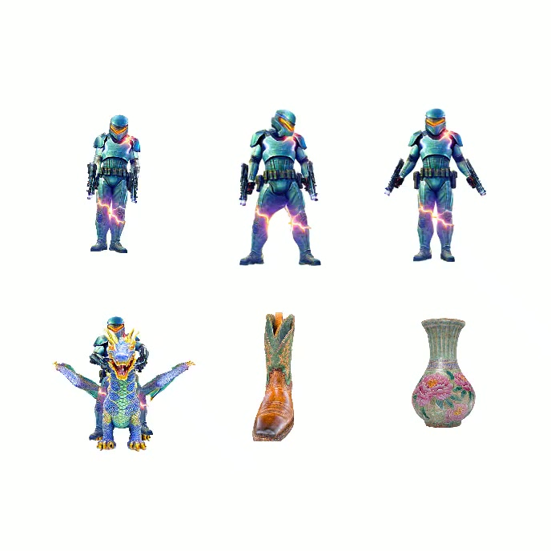
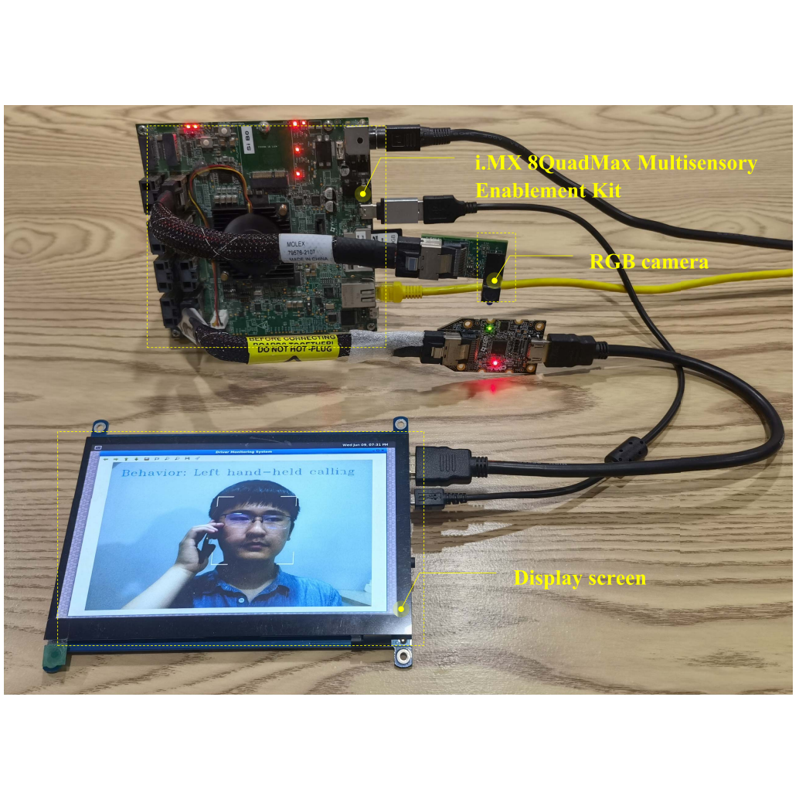
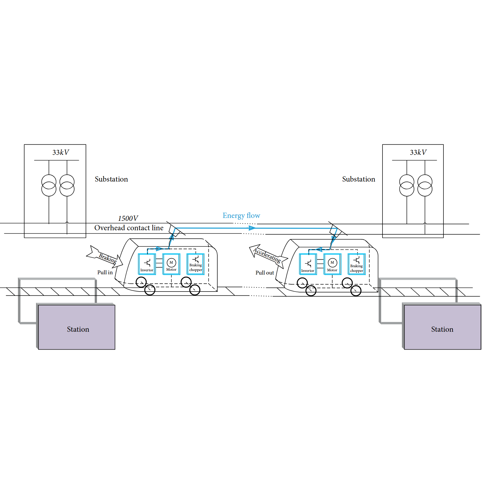

|
Junjie Wang (王俊杰)
I am an independent research scientist based in Boston, MA. Previously, I worked as a research scientist at Huawei, focusing on 3D editing and generation, under the guidance of Dr. Jiemin Fang and Dr. Qi Tian.
|

|
ResearchI am interested in emerging technologies, particularly those related to artificial intelligence. My current research focuses on computer vision, particularly 3D vision. I aim to develop computer vision methods that: (1) enable machines to perceive and interact with the physical world in order to assist people with everyday tasks, and (2) create immersive and playful virtual worlds that are accessible and enjoyable for everyone. |
|

|
GaussianEditor: Editing 3D Gaussians Delicately with Text Instructions
Junjie Wang*, Jiemin Fang*, Xiaopeng Zhang, Lingxi Xie, Qi Tian, CVPR, 2024 NEW project page / arXiv A general framework for 3D scene editing that enables precise text-based modifications of 3D assets within 20 minutes. |
|
|
GaussianDreamer: Fast Generation from Text to 3D Gaussian Splatting with Point Cloud Priors
Taoran Yi, Jiemin Fang, Junjie Wang, Guanjun Wu, Lingxi Xie, Xiaopeng Zhang, Wenyu Liu, Qi Tian, Xinggang Wang, CVPR, 2024 NEW project page / arXiv / code A fast 3D generation framework that produces a high-quality 3D instance within 25 minutes on a single GPU. |
|

|
GaussianDreamerPro: Text to Manipulable 3D Gaussians with Highly Enhanced Quality
Taoran Yi, Jiemin Fang, Zanwei Zhou, Junjie Wang, Guanjun Wu, Lingxi Xie, Xiaopeng Zhang, Wenyu Liu, Xinggang Wang, Qi Tian, arXiv, 2024 NEW project page / arXiv / code A method that generates highly detailed and high-quality 3D assets from text, whose outputs can be readily integrated into downstream pipelines such as animation, composition, and simulation. |
|

|
Cooperative Detection Method for Distracted and Fatigued Driving Behaviors With Readily Embedded System Implementation
Junjie Wang, Yangkun Wang, Yi Dai, Feng Zhang, Xiaodong Yu, IEEE Transactions on Instrumentation and Measurement, 2022 paper A cooperative approach for detecting distracted and fatigued driving behaviors, with practical embedded system implementation. |
|

|
A Real-Time Timetable Rescheduling Method for Metro System Energy Optimization under Dwell-Time Disturbances
Guang Yang, Junjie Wang, Feng Zhang, Shiwen Zhang, Cheng Gong, Journal of Advanced Transportation, 2019 paper A method for immediate rescheduling of trains under unexpected disturbances, maximizing the reuse of regenerative energy. |
ServiceReviewer: SIGGRAPH Asia |
|
This webpage is adapted from a template kindly shared by Jon Barron. |